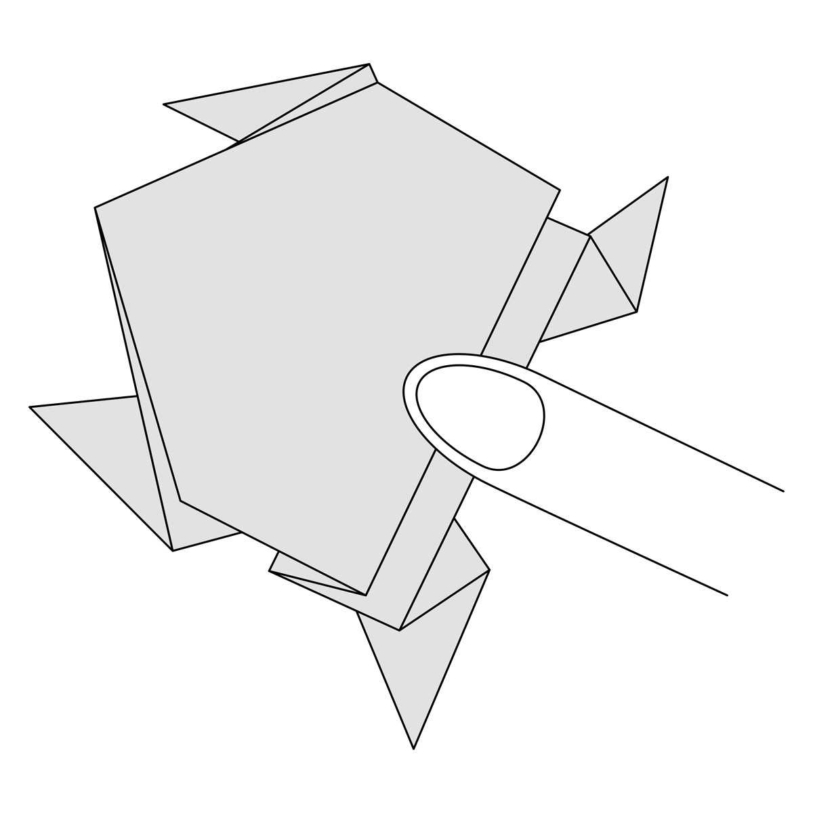
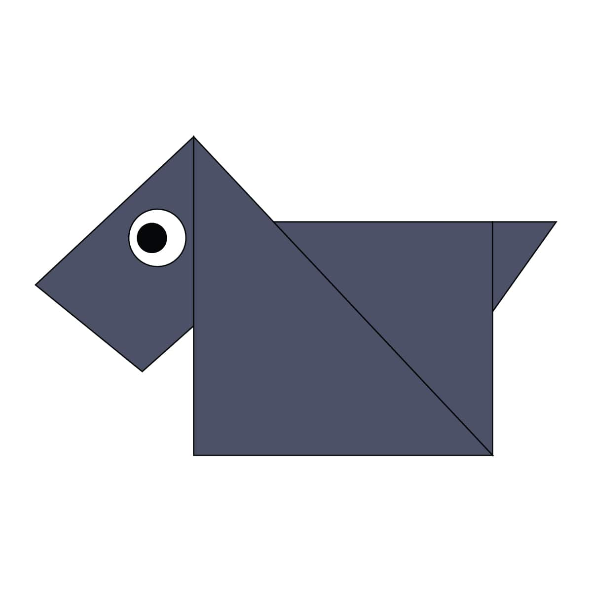

How to make an origami camel

Interesting facts about a camel!!
- There are two types of camels: One humped or “dromedary” camels and two humped Bactrian camels.
- Camels have three sets of eyelids and two rows of eyelashes to keep sand out of their eyes.
- Camels have thick lips which let them forage for thorny plants other animals can't eat
How to make an origami chameleon

Interesting facts about a chameleon!!
- They mainly change color in order to communicate or regulate body temperature.
- Skin crystals enable them to change color at will.
- Unlike many lizards, chameleons can't regrow their tails.
How to make an origami cicada

Interesting facts about a cicada!!
- Cicadas can survive a huge fall as babies, or nymphs.
- The loud whirring or buzzing sound you hear is an all-male cicada chorus.
- They're true bugs (from the order Hemiptera).
How to make an origami panda

Interesting facts about a panda!!
- They have great camouflage for their environment.
- Cubs are well protected in their first month.
- Their eyes are different to normal bears.
How to make an origami pigeon

Interesting facts about a pigeon!!
- Pigeons are highly sociable animals
- Pigeons are renowned for their outstanding navigational abilities
- Pigeons are incredibly complex and intelligent animals.
How to make an origami teddy

Interesting facts about a teddy!!
- There aren't any
How to make an origami frog

Interesting facts about a frog!!
- There are over 4,700 species of frogs!
- Every year that a frog goes into hibernation, a new layer of bone forms.
- Many frogs can jump 20 times their own height
How to make an origami dog

Interesting facts about a dog!!
- Dogs noses are wet to help absorb scent chemicals.
- Newfoundlands are amazing lifeguards.
- The Beatles song 'A Day in the Life' has a frequency only dogs can hear.